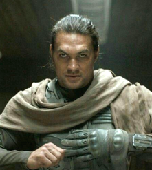

There is a list of main characters. In these four characters,
Herbert tells a story about power, love, and destiny.
He invites readers on a special adventure in the desert of Arrakis.
This adventure is full of twists and turns. These four characters show
us important things about being human, and these lessons apply not just here,
but across the whole universe.
Paul Atreides is the central character in Frank Herbert's "Dune" series.
Born into House Atreides, Paul is prophesied to be the Kwisatz Haderach,
a figure with unparalleled abilities. Raised on the desert planet Arrakis,
he undergoes a transformative journey from noble heir to charismatic leader,
challenging empires and shaping the fate of the universe.
Paul Atreides evolves from a young noble into the legendary figure known as Muad'Dib.
Endowed with prescient abilities and a profound understanding of the mystical spice melange,
he leads the Fremen in a holy war against the oppressive rule of the Padishah Emperor.
As Emperor himself, Paul grapples with the consequences of his choices, facing moral
dilemmas and the burdens of prophecy. His struggle for balance between power and humanity
forms the core of his character, making him an iconic figure in science fiction literature.
Lady Jessica is a member of the Bene Gesserit sisterhood and mother to
Paul Atreides. Her unique training in the Bene Gesserit's psychic and
physical disciplines makes her a formidable presence. Her love for Paul
and her role in his upbringing play crucial roles in the unfolding
events of the Dune series.
A product of the secretive Bene Gesserit sisterhood,
Lady Jessica is a complex character marked by her defiance of the sisterhood's
breeding program. Her love for Duke Leto and their son Paul challenges the expectations
set for her. Throughout the series, her unwavering loyalty to her family and her role as
a mother in the epic's grand tapestry shape the destiny of Arrakis. Her mastery of Bene
Gesserit techniques and her fierce intellect make her a formidable force, even in a
male-dominated society.
Chani is a Fremen warrior and the love interest of Paul Atreides.
Born in the arid deserts of Arrakis, she possesses an intimate knowledge
of the planet's harsh environment. Her strength, wisdom, and devotion to
Paul make her an essential figure in the saga, influencing the destiny of
Arrakis and its people.
Chani emerges as more than a love interest for Paul; she embodies the
heart of the Fremen resistance. As a skilled warrior and gifted herbalist,
she navigates the harsh desert landscape with grace and purpose.
Her partnership with Paul is founded on mutual respect and a shared vision
for a liberated Arrakis. Chani's strength and wisdom, coupled with her
intimate knowledge of the desert's secrets, contribute significantly to the
Fremen's fight for freedom and the legacy of Muad'Dib.

Duncan Idaho is a loyal and skilled Swordmaster of House Atreides.
Throughout the series, he undergoes numerous incarnations due to advanced
cloning technology. Each version of Duncan contributes to the ongoing narrative,
becoming a symbol of loyalty, valor, and the complexities of identity in the ever-evolving world of Dune.
Duncan Idaho's enduring presence throughout the series is a testament to his unwavering loyalty
and exceptional combat skills. From his initial role as a Swordmaster to his successive incarnations,
Duncan's character raises profound questions about identity and memory in a universe where technology
allows for reincarnation. Each version of Duncan brings a unique perspective, contributing to the
ever-evolving narrative. His undying commitment to House Atreides and the moral dilemmas he faces
as a result of his continued existence add layers of complexity to his character, making him
a fan-favorite figure in the Dune universe. He is the only character that will be in all the series of
books that lasts for thousands years